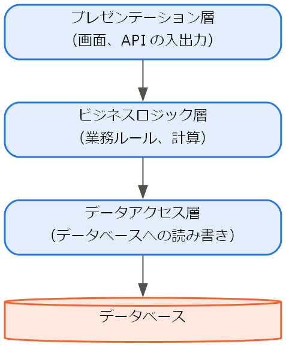
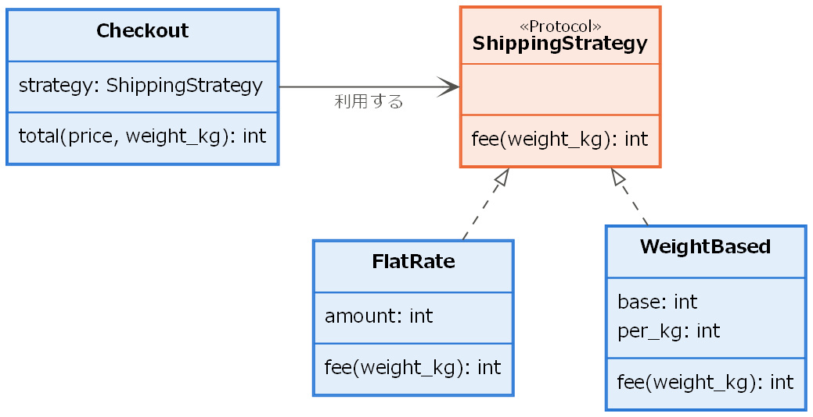

5. アーキテクチャとデザインパターン
第 4 章では、モジュール単位の設計原則を説明した。本章では、より大きな単位であるシステム全体の構造（アーキテクチャ）と、設計上のよくある問題に対する定石（デザインパターン）を説明する。また、設計を図で表現するための UML を紹介する。
5.1. アーキテクチャスタイル
ソフトウェアアーキテクチャとは、システムを構成する要素、要素間の関係、およびそれらを決めた理由の総体である。アーキテクチャは一度決めると変更が難しく、性能・可用性・保守性などの非機能要求に大きな影響を与える。よく用いられるアーキテクチャの型をアーキテクチャスタイルと呼ぶ。代表的なものを次に示す。
スタイル |
構造 |
主な利点 |
|---|---|---|
レイヤードアーキテクチャ |
システムを「プレゼンテーション層」「ビジネスロジック層」「データアクセス層」などの層に分け、各層は自分より下の層だけを利用する。 |
関心事が分離され、層ごとに変更・置換しやすい。 |
MVC（Model-View-Controller） |
データと業務処理を担う Model、表示を担う View、入力を受けて Model と View を制御する Controller に分ける。 |
表示の変更が業務処理に影響しにくい。 |
クライアントサーバー |
サービスを要求するクライアントと、サービスを提供するサーバーに分ける。 |
データや処理をサーバーに集約でき、管理しやすい。 |
イベント駆動 |
構成要素がイベントを発行し、関心のある構成要素がそれを受け取って処理する。 |
構成要素同士の結合度が低く、拡張しやすい。 |
マイクロサービス |
システムを、独立してデプロイできる小さなサービスの集まりとして構成し、サービス同士はネットワークを通じて連携する。 |
サービスごとに独立して開発・デプロイ・拡張できる。 |
例えば、Web アプリケーションをレイヤードアーキテクチャで構成すると図 5.1 のようになる。

図 5.1 レイヤードアーキテクチャの例（矢印は依存の向きを表す）
アーキテクチャスタイルにも利点と引き換えの欠点がある。例えば、マイクロサービスはサービスごとの独立性が高い一方で、ネットワーク通信の遅延や障害、データの整合性の確保、運用の複雑さといった新たな問題を生む。小規模なチームや開発の初期段階では、1 つのアプリケーションとして構成する（モノリシックな）アーキテクチャのほうが適している場合も多い。
なお、組織の構造とシステムの構造は似通うという経験則が知られており、コンウェイの法則と呼ばれる（第 11 章）。アーキテクチャを選ぶ際には、それを開発・運用するチームの構成もあわせて考える必要がある。
5.2. デザインパターン
デザインパターンは、ソフトウェア設計で繰り返し現れる問題と、その解決策を名前を付けて整理したものである。Gamma、Helm、Johnson、Vlissides の 4 人（Gang of Four、GoF）による書籍 [GoF1994] で紹介された 23 のパターンが特に有名であり、目的によって次の 3 つに分類される。
分類 |
数 |
内容と代表例 |
|---|---|---|
生成に関するパターン |
5 |
オブジェクトの生成方法を抽象化する。例: Factory Method、Singleton、Builder |
構造に関するパターン |
7 |
クラスやオブジェクトを組み合わせて大きな構造を作る。例: Adapter、Composite、Decorator |
振る舞いに関するパターン |
11 |
オブジェクト間の責任の分担と連携の方法を定める。例: Strategy、Observer、Template Method |
デザインパターンを学ぶ利点は、定石となる解決策を再利用できることだけではない。「ここは Strategy パターンにしよう」のように、設計の意図を短い言葉で正確に伝えられるようになることも大きな利点である。
一方で、パターンを使うこと自体が目的になると、不要な複雑さを持ち込むことになる。また、GoF のパターンの一部は、当時の C++ や Smalltalk の言語機能の制約を補うためのものであり、Python のように関数を値として扱える言語では、より簡潔に書けるものもある。
5.2.1. Strategy パターン
Strategy パターンは、アルゴリズム（戦略）をクラスとして切り出し、実行時に差し替えられるようにするパターンである。次の例では、送料の計算方法を戦略として切り出している。クラスの関係を UML のクラス図（後述）で表すと図 5.2 のようになる。

図 5.2 Strategy パターンの例のクラス図
1"""Strategy パターンの例（第 5 章）.
2
3送料の計算方法（戦略）をクラスとして切り出し、実行時に差し替えられるようにする。
4新しい計算方法を追加するときは、既存のコードを変更せずに
5新しいクラスを追加するだけでよい（開放閉鎖の原則）。
6"""
7
8from typing import Protocol
9
10
11class ShippingStrategy(Protocol):
12 """送料の計算方法の抽象."""
13
14 def fee(self, weight_kg: float) -> int:
15 """重さ ``weight_kg`` の荷物の送料（円）を返す."""
16 ...
17
18
19class FlatRate:
20 """重さに関係なく一律の送料."""
21
22 def __init__(self, amount: int) -> None:
23 self.amount = amount
24
25 def fee(self, weight_kg: float) -> int:
26 return self.amount
27
28
29class WeightBased:
30 """基本料金に 1 kg ごとの料金を加算する."""
31
32 def __init__(self, base: int, per_kg: int) -> None:
33 self.base = base
34 self.per_kg = per_kg
35
36 def fee(self, weight_kg: float) -> int:
37 return self.base + round(self.per_kg * weight_kg)
38
39
40class Checkout:
41 """会計処理。送料の計算は戦略オブジェクトに任せる."""
42
43 def __init__(self, strategy: ShippingStrategy) -> None:
44 self.strategy = strategy
45
46 def total(self, price: int, weight_kg: float) -> int:
47 """商品価格と送料の合計を返す."""
48 return price + self.strategy.fee(weight_kg)
49
50
51if __name__ == "__main__":
52 for strategy in (FlatRate(500), WeightBased(300, 100)):
53 checkout = Checkout(strategy)
54 name = type(strategy).__name__
55 print(f"{name}: {checkout.total(price=3000, weight_kg=2.5)} 円")
ダウンロード: ch05_strategy.py
Checkout クラスは送料の計算方法を知らず、渡された戦略オブジェクトに計算を任せている。新しい送料体系（例えば「一定金額以上は無料」）を追加する場合も、ShippingStrategy を満たすクラスを新たに作るだけでよく、Checkout を修正する必要はない。これは第 4 章で説明した開放閉鎖の原則の実現例である。
5.2.2. Observer パターン
Observer パターンは、あるオブジェクト（Subject）の状態が変化したときに、それに依存する複数のオブジェクト（Observer）へ自動的に通知するパターンである。次の例では、温度センサーの値が変化したときに、表示と警告の処理に通知している。Python では関数を値として扱えるため、Observer をクラスではなく関数として実装している。
1"""Observer パターンの例（第 5 章）.
2
3温度センサー（Subject）の値が変わると、登録された観察者（Observer）に
4自動的に通知する。センサーは観察者の具体的な型を知らないため、
5表示や警告などの処理を自由に追加・削除できる。
6"""
7
8from collections.abc import Callable
9
10Observer = Callable[[float], None]
11
12
13class TemperatureSensor:
14 """温度を保持し、変化を観察者に通知する."""
15
16 def __init__(self) -> None:
17 self._observers: list[Observer] = []
18 self._celsius = 0.0
19
20 def subscribe(self, observer: Observer) -> None:
21 """観察者を登録する."""
22 self._observers.append(observer)
23
24 def unsubscribe(self, observer: Observer) -> None:
25 """観察者の登録を解除する."""
26 self._observers.remove(observer)
27
28 def update(self, celsius: float) -> None:
29 """温度を更新し、すべての観察者に通知する."""
30 self._celsius = celsius
31 for observer in self._observers:
32 observer(celsius)
33
34
35def display(celsius: float) -> None:
36 """現在の温度を表示する観察者."""
37 print(f"現在の温度: {celsius:.1f} ℃")
38
39
40def alert(celsius: float) -> None:
41 """高温時に警告する観察者."""
42 if celsius >= 30.0:
43 print("警告: 高温である")
44
45
46if __name__ == "__main__":
47 sensor = TemperatureSensor()
48 sensor.subscribe(display)
49 sensor.subscribe(alert)
50 sensor.update(25.0)
51 sensor.update(31.5)
ダウンロード: ch05_observer.py
TemperatureSensor は通知先が何をするかを知らないため、記録や通知などの処理を追加しても、センサーのクラスを修正する必要がない。GUI のイベント処理や、前述のイベント駆動アーキテクチャは、このパターンの考え方に基づいている。
5.3. UML によるモデリング
UML（Unified Modeling Language、統一モデリング言語）は、ソフトウェアの構造や振る舞いを図で表現するための標準的な表記法である。UML 2.5 では 14 種類の図が定められており、構造を表す構造図と、振る舞いを表す振る舞い図に分けられる。すべての図を覚える必要はなく、実務では次の図がよく使われる。
図 |
分類 |
用途 |
|---|---|---|
クラス図 |
構造図 |
クラスの属性・操作と、クラス間の関係（継承、関連、依存など）を表す。 |
コンポーネント図 |
構造図 |
システムを構成するコンポーネントと、それらの依存関係を表す。 |
ユースケース図 |
振る舞い図 |
アクターとユースケースの関係を表す（第 3 章）。 |
シーケンス図 |
振る舞い図 |
オブジェクト間のメッセージのやり取りを時系列で表す。 |
アクティビティ図 |
振る舞い図 |
処理の流れや業務の手順を表す。 |
状態マシン図 |
振る舞い図 |
オブジェクトの状態と、状態の遷移を表す。 |
クラス図では、クラス間の関係を線の種類で区別する。主な関係を次に示す。
関係 |
表記 |
意味 |
|---|---|---|
汎化（継承） |
白抜きの三角形の矢印が付いた実線 |
子クラスが親クラスを継承する。 |
実現 |
白抜きの三角形の矢印が付いた破線 |
クラスがインターフェースを実装する。 |
関連 |
実線 |
クラス同士が構造的なつながりを持つ。 |
集約 |
白抜きのひし形が付いた実線 |
全体と部分の関係（部分は全体とは独立して存在できる）。 |
コンポジション |
黒塗りのひし形が付いた実線 |
全体と部分の関係（部分は全体と運命を共にする）。 |
依存 |
矢印が付いた破線 |
一方が他方を一時的に利用する。 |
UML は、設計の検討や関係者との意思疎通のための道具である。すべてのクラスを網羅した詳細な図を描くことよりも、伝えたい内容に必要な部分だけを描くことが重要である。
5.4. まとめ
アーキテクチャは非機能要求に大きな影響を与えるため、利点と欠点を比較して選択する。
デザインパターンは、繰り返し現れる設計の問題に対する定石であり、設計の意図を伝える共通語彙にもなる。
UML は設計を図で表現する標準的な表記法であり、目的に応じて必要な図を描く。
5.5. 演習問題
解答例は「第 5 章の解答例」にある。
問題 5-1：ch05_strategy.py に、次の送料体系を表す戦略クラスを追加せよ。重さが 2 kg までは 400 円、2 kg を超えた分は 1 kg ごとに 200 円を加算する（1 kg 未満の端数は 1 kg とみなす）。
問題 5-2：ch05_observer.py に、受け取った温度を履歴として記録し、平均値を求められる観察者を追加せよ。
問題 5-3：5 人のチームが新しい社内向けの業務システムを開発する。マイクロサービスアーキテクチャの採用を提案されたとき、どのような点を懸念すべきか。2 つ挙げよ。
5.6. 発展課題
演習問題より発展的な課題である。正解が 1 つに定まらないものも含む。解答例や解答の方針は「第 5 章の解答例」にある。
発展課題 5-A：ch05_strategy.py の Strategy パターンを、クラスを使わずに関数だけで実装し直せ。戦略には名前を付けて辞書に登録し、文字列で選べるようにすること。また、クラスによる実装と関数による実装の利点と欠点を比較せよ。